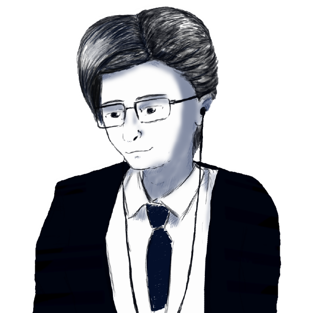

Привет, в интернете меня знают под псевдонимом Geek Man, однако в жизни меня зовут Артур.
В 2016 году я впервые узнал о том, что игры появляются не из воздуха и за их разработкой стоят такие же обычные люди.
Я увлекся этой темой и скачал движок Unity. Ничего не понял и удалил его забыв про разработку игр. Спустя 3 года уже в 2019 году я начал искать движки.
Я искал инструмент, где бы не требовались особые навыки программиста и всё внимание было бы сосредоточено на самой разработке игры. Мой выбор пал на игровой конструктор Construct 2.
Я разрабатывал игры, а в какой-то момент начал записывать туториалы по этому конструктору. После всего этого я удалил свой ютуб-канал с 800 подписчиками и создал новый с целью записи
качественных туториалов и других видео. На данный момент я разрабатываю игры в Construct 3, пару проектов вы можете увидеть на этом сайте перейдя в категорию "Мои проекты"
Я стараюсь не зацикливаться на одном лишь Construct, в мои интересы попадает ещё Godot, который естественно сложнее, но функционала у него в разы больше.
Если вам интересна жизнь маленького инди-разработчика, тогда присоединяйтесь к моим Соц. Сетям и ждите новые игры :)